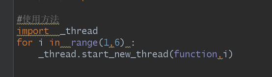
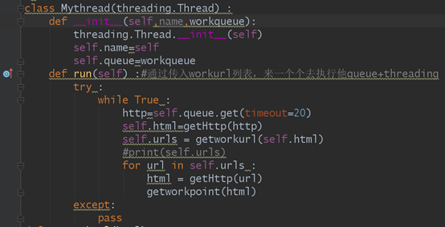
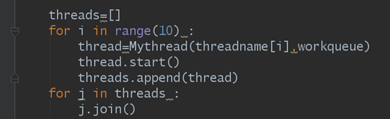
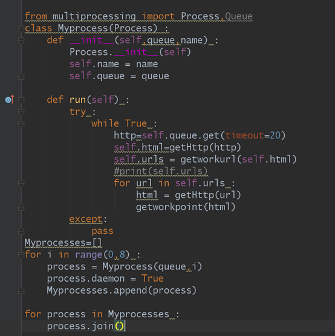
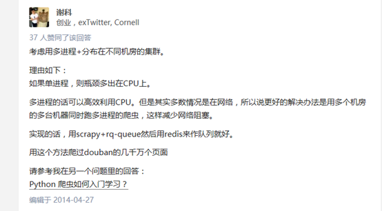
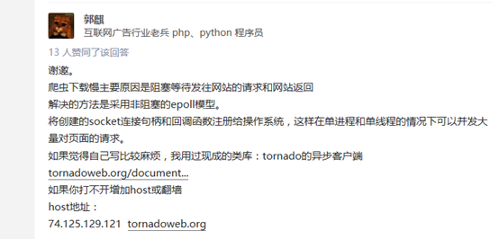

这里主要讲两个方法来提升爬虫速度以及如何优化
通过函数来产生方法
通过_thread.start_new_thread()来产生新的线程，括号里面要加的是函数名和一些参数

这个是比较低级的，自主添加性不高，不过可以用来临时做要求性不高的东西
通过模块来提高速度
通过threading模块来产生新的线程
模块里的常见方法
run():用来产生表示线程的方法
start():用来启动一个线程
join():只有当线程加载完时，才会接着主线继续执行下去
isAlive():如果线程还在运行就会返回一个True否则就会返回一个False
getName():获取一个线程的名字
setName()设置一个线程的名字
格式：


注：只要线程开始运行就会自动运行run方法，所以我们只要对run()方法进行重写就可以了最重要的就是run方法，如果说_thread（）函数与threading模块有什么不同，那就是threading里面得run方法能放很多函数，但是_thread()只能有一个函数
通过multiprocessing模块来产生新的进程
Multiprocessing模块的方法与threading的模块方法类似

爬虫得优化：使用queue队列型，这样就能做到自动结束，而不用向列表一样特别烦，queue一般使用：(queue模块的使用) 1、创建：
import Queue
myqueue = Queue.Queue(maxsize = 10)
2、将值放到队列里面：
myqueue.put(10)，
put()有两个参数，第一个item为必需的，为插入项目的值；第二个block为可选参数，默认为1。如果队列当前为空且block为1，put()方法就使调用线程暂停,直到空出一个数据单元。如果block为0，put方法将引发Full异常。
3、将一个值从列队里面拿出来
myqueue.get()调用队列对象的get()方法从队头删除并返回一个项目。可选参数为block，默认为True。如果队列为空且block为True，get()就使调用线程暂停，直至有项目可用。如果队列为空且block为False，队列将引发Empty异常。
今天爬虫事情暂停我还没写的爬虫速度优化有
使用pool+queue的多进程爬虫
多协程爬虫
还有的优化爬虫速度的方法： 这些建议的url


为何大量网站不能抓取?***爬虫突破封禁的6**种常见方法***
def insert_info():
'''
通过遍历游戏分类页面获取所有直播间
'''
session = requests.session()
pagecontent = session.get(Directory_url).text
pagesoup = BeautifulSoup(pagecontent)
games = pagesoup.select('a')
col.drop()
for game in games:
links = game["href"]
Qurystr = "/?page=1&isAjax=1"
gameurl = HOST + links + Qurystr
gamedata = session.get(gameurl).text
flag = get_roominfo(gamedata)
aggregateData()
from multiprocessing.dummy import Pool
pool = Pool()
def insert_info():
'''
通过遍历游戏分类页面获取所有直播间
'''
session = requests.session()
pagecontent = session.get(Directory_url).text
pagesoup = BeautifulSoup(pagecontent)
games = pagesoup.select('a')
gameurl = [HOST + url["href"] + "/?page=1&isAjax=1" for url in games]
col.drop()
g = lambda link: session.get(link).text
gamedata = pool.map(g, gameurl)
ginfo = lambda data: get_roominfo(data)
pool.map(ginfo, gamedata)
aggregateData()
aggregateData()
同样通过Directory_url这一地址获取页面中所有标签，然后通过pool.map(g, gameurl)完成'href'值的获取，最后再用一次pool.map(ginfo,gamedata)完成所有页面内容的提取和入库。再一次测试，只需要33.1s即可完成。 所以说，如果你的爬虫也要处理类似的过程，不妨尝试一下multiprocessing。 更多详细信息可以参考官方文档。